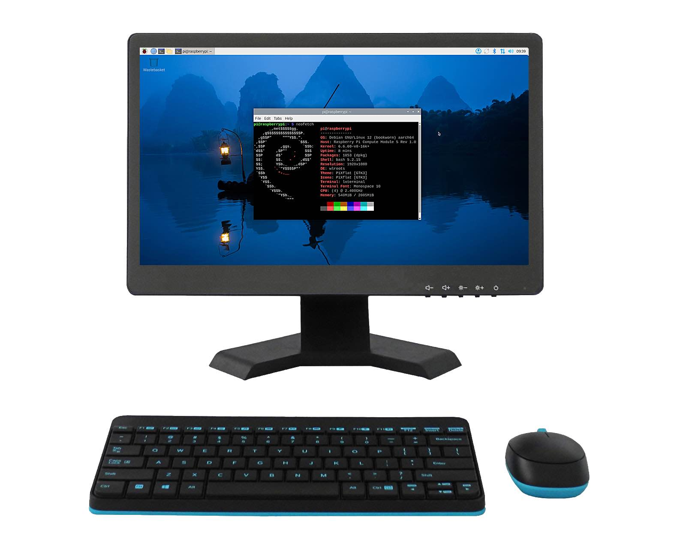
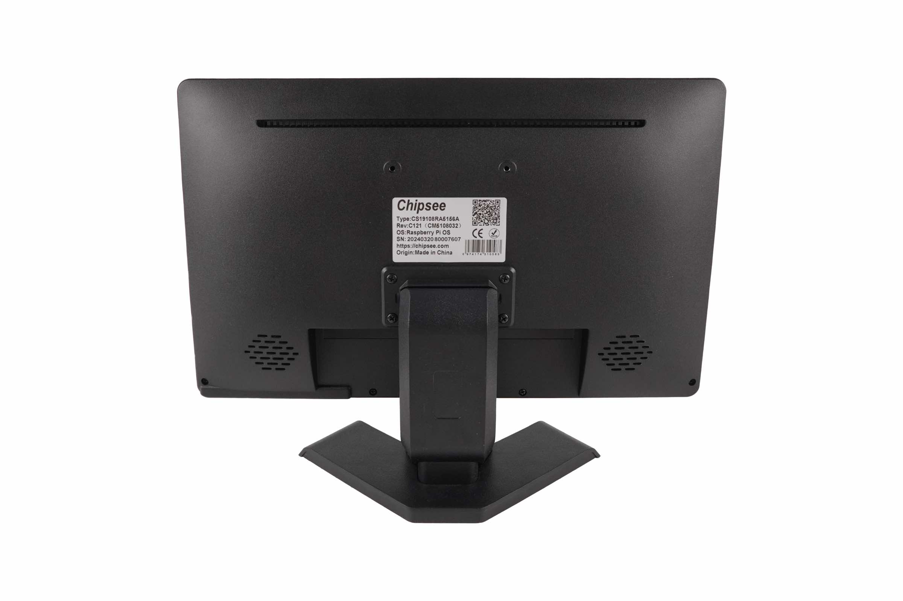
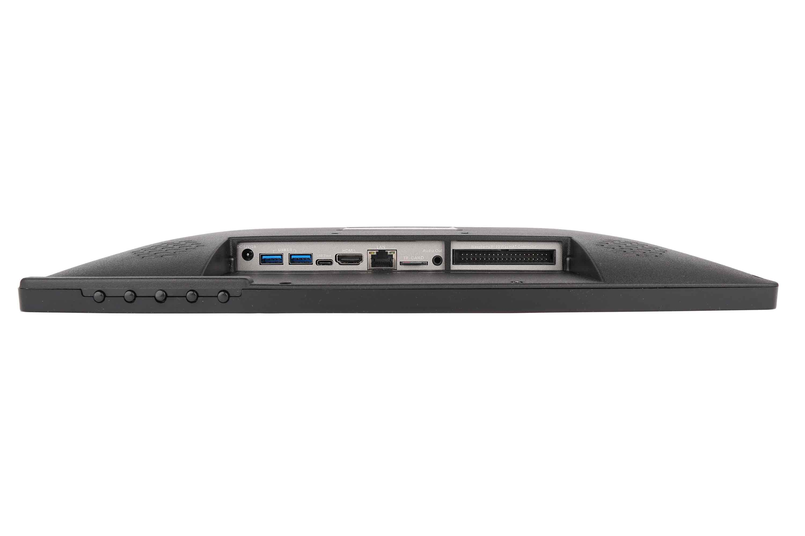
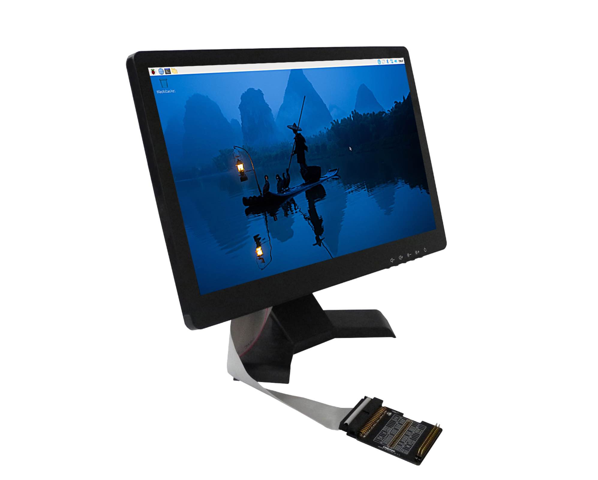

AIO-CM5-156¶
Version 1.0




Product Overview¶
The AIO-CM5-156 all in one Raspberry Pi PC (PN: CS19108RA5156A) is an all-in-one desktop computer based on Raspberry Pi® CM5.
Its case is plastic, very light to carry around, or mount it to a fixed place as a smart home control center. The case is available in Black color.
This single board computer features a 15.6” IPS LCD with a maximum brightness of 350 cd/m2. The touch screen is a responsive capacitive screen and supports multi touch.
The product is easy to use, perfect for developers and makers accustomed to the Raspberry Pi and is looking for a computer they can use daily, it handles 1080P video streaming easily and even 4K streaming, like the Raspberry Pi 5.
It is also fully compatible with the Raspberry Pi OS.
Ordering Options¶
Chipsee products can be customized during the ordering process. The product will be shipped with the pre-installed factory defaults if no extra requirements are specified. The table in the Hardware Features section provides information about the default options bundled with the product.
Note
You can order AIO-CM5-156 from the official Chipsee Store or from your nearest distributor.
Pi® CM5 Module¶
The Pi® Compute Module 5 appears in different versions (different RAM size: 2GB, 4GB, or 8GB SDRAM based on CM5 and different eMMC size: 0GB, 16GB, 32GB, or 64GB based on CM5).
The AIO-CM5-156 all in one Raspberry Pi PC does not include the CM5 Raspberry Pi® module by default.
If you would like to purchase it with a CM5, you can select it at the Chipsee store during the ordering process.
Operating System¶
This product comes with a pre-installed Raspberry Pi OS. Chipsee software engineers have created all the drivers, so every hardware feature is readily available for any standard development tool.
If your project requires a different OS, please Contact us, and we’ll make a customized version that suits your needs.
Optional Features¶
The product has a m.2 2280 slot, running at PCIe 2.0 x1 speed (PCIe 3.0 is possible but experimental for CM5), you can use it with your NVMe SSD or other modules that can fit in a m.2 2280 M-key slot and supports the protocol. By default the NVMe SSD is not mounted.
The installation DIY is easy, unscrew all the screws in the back of the product, and then plug a thin (plastic is a good choice) chip into the bottom edge of the back case, swipe left and right to unlock the fastener of the panel, then carefully open it up. Be careful not to accidentally break the wires connecting the screen and the PCB when you open up the back case.
Warning
Hardware Features¶
The AIO-CM5-156 all in one Raspberry Pi PC offers a broad range of performance and connectivity options for scalable integration, providing expandability according to future needs.
Some of the key features are listed in the table below.
AIO-CM5-156 |
|
|---|---|
CPU |
Raspberry Pi® CM5/CM5Lite; BCM2712 Quad(4) Core Cortex-A76 at 2.4GHz |
Storage |
Internal M.2 NVMe connector for SSD card (optional) |
RAM |
2GB, 4GB, or 8GB SDRAM based on CM5 |
eMMC |
0GB, 16GB, 32GB, or 64GB based on CM5 |
Display Size |
15.6” |
Display Type |
IPS LCD |
Display Resolution |
1920 x 1080 |
Brightness |
350 cd/m2 |
Touch Technology |
Capacitive |
Touch Point |
10 |
Glass |
1.1mm Armored Glass |
USB |
2 x USB 3.0 Host, 1 x Type-C USB (Slave) |
PCIe |
M.2 2280 M-key, PCIe Gen 2.0 x1 (PCIe Gen 3.0 x1 is compatible but experimental) (optional) |
LAN |
1 x Giga LAN |
Audio |
2W internal stereo speaker, 3.5mm audio Out connector |
Buzzer |
Internal Buzzer |
RTC |
High accuracy RTC with farad capacitor, can work 1 week after power off (default). High accuracy RTC with lithium coin battery, can work 3 years after power off (optional). |
GPIO/Wiegand |
40-pin GPIO connector |
WiFi/BT |
WiFi/BT module comes with the CM5 |
HAT Connector |
Standard Raspberry Pi 40-way HAT connector |
Micro SD card socket |
1 x TF(micro SD) card slot, only for CM5 Lite module to boot from TF |
HDMI |
HDMI 2.0 connector, can be driven up to 4K 60FPS |
Power Input |
12V DC |
Current |
1A Max, 800mA typical |
Power Consumption |
12W Max, 9.6W typical |
Relay |
N/A |
RS232 |
N/A |
RS485 |
N/A |
CAN |
N/A |
3G/4G/LTE/GPS |
N/A |
Working Temperature |
From 0°C to +50°C |
OS |
Raspberry Pi OS, Android |
Dimensions |
374 x 238 x 33mm |
Weight |
1600g |
Mounting |
VESA, Stand |
Plastic Case Color |
Black |
Certification |
CE, ROHS |
Power Input¶
The AIO-CM5-156 all in one Raspberry Pi PC can be powered by an input voltage of 12V DC.
The total power consumption is about 12W Max, 9.6W typical, depending on the load and brightness.
The power input connector is a 2.1mm I.D x 5.5mm O.D x 9.5mm DC connector. For a proper DC power adapter, refer to the figure below.

Power Input

Power Adapter
Connectivity¶
There are many connectivity options available on the AIO-CM5-156 industrial Pi PC. It has 2 x USB 3.0 Host, 1 x Type-C USB (Slave), 1 x Giga LAN (RJ45) Ethernet connector supporting up to 1 Gbps.
USB HOST and Type C¶
There are 2 x 3.0 USB Type-A HOST connectors and 1 x Type-C connector onboard, as shown in the image below.

USB3.0 HOST and Type-C Connectors
Note
External USB peripherals like a USB disk or USB mouse or keyboard can connect to the USB3.0 HOST.
You can download software to the Raspberry Pi CM5 eMMC using the Type-C.
When you connect the Type-C to a device, it will disable the USB HOST.
M.2 Connector¶
The product has an optional M.2 2280 M-key, PCIe Gen 2.0 x1 (PCIe Gen 3.0 x1 is compatible but experimental) connector. You can attach an M.2 NVME drive, or an AI module to expand the product’s capability. If you need the M.2 slot please contact us before placing an order.
LAN Connectors¶
LAN (RJ45) connector provides Ethernet connectivity over standardized Ethernet cables as shown the figure below. The integrated Ethernet interface supports up to 1 Gbps data throughput. The Giga LAN signal comes from the CM5 module directly.

RJ45 LAN Connectors
Note
Use CAT5 or better cables to achieve full data throughput over maximum distance defined by the 1000BASE-T standard (100m).
TF Card Slot¶
The AIO-CM5-156 all in one Raspberry Pi PC features 1 x TF Card (micro SD) slot that can only be used with CM5 Lite modules, as shown in the image below (note the direction of the TF card).

TF Card Slot
Warning
The TF card is only for booting operating system for the CM5 Lite. The TF card cannot be used for expanding storage for CM5.
The product does not come shipped with the TF Card by default.
Audio Out Connector¶
The product features 3.5mm audio connector as shown in the image below.

Audio Out Connector
Internal Speaker¶
The product also has an internal 2W speaker, meaning you can play music without an earphone, the sound can be played from the product directly.
Buzzer¶
The product has an internal buzzer, suitable for playing beep sounds for alarms.
HDMI¶
The CM5 supports dual HDMI 2.0 connectors.
The product uses the master HDMI for the integrated LCD screen, there is an extra slave HDMI port to connect a second monitor to the product.
You can set this second monitor in the Display Settings of the Raspberry Pi OS.

HDMI Connector (slave)
Camera¶
The AIO-CM5-156 all in one Raspberry Pi PC has a camera on the front panel but is not mounted by default.
40-Pin Expansion Connector¶
The AIO-CM5-156 all in one Raspberry Pi PC has a standard Raspberry Pi 40 way HAT connector, as the figure below shows. You also can check Pinout for more details.

40-pin expansion

40-pin expansion functions
You also can check pinout.xyz for more details.
Raspberry Pi Hat adapter¶
The product also has an available I/O connector that is 100% compatible with any Raspberry Pi cape or extensions, making the AIO-CM5-156 a perfect fit with your existing tools.
The product also comes with an adapter with a standard Raspberry Pi HAT pin-out to add more flexibility to your project. It offers a convenient way to develop and test your hardware with all the connectors at hand.
You can learn more about it in the product manual.

Raspberry Pi Hat adapter


Mounting Procedure¶
You can mount AIO-CM5-156 with the Vesa (75 x 75mm) and Stand mounting methods, as shown in the figures below.

VESA mounting
The product also ships with a base stand, if you don’t need the stand you can contact us when placing orders.
(The keyboard and mouse are NOT included in the product.)

Stand mounting
Attention
Please make sure the display is not exposed to high pressure when mounting into an enclosure.
You can find detailed information about mounting in the Mount IPC Guide.
Mechanical Specifications¶
The outer mechanical dimensions of AIO-CM5-156 are 374 x 238 x 33mm (W x L x H). Please refer to the technical drawing in the figures below for details related to the specific product measurements.

Front Panel Dimension Technical Drawing

Side Dimension Technical Drawing
3D Model¶
AIO-CM5-156 3D model can be viewed in the online doc in a web browser, if you are reading from the PDF version, please visit the online doc AIO-CM5-156, select hardware documentation, drag the navigation bar to the 3D Model section.
Disclaimer¶
This document is provided strictly for informational purposes. Its contents are subject to change without notice. Chipsee assumes no responsibility for any errors that may occur in this document. Furthermore, Chipsee reserves the right to alter the hardware, software, and/or specifications set forth herein at any time without prior notice and undertakes no obligation to update the information contained in this document.
While every effort has been made to ensure the accuracy of the information contained herein, this document is not guaranteed to be error-free. Further, it does not offer any warranties or conditions, whether expressed orally or implied in law, including implied warranties and conditions of merchantability or fitness for a particular purpose. We specifically disclaim any liability with respect to this document, and no contractual obligations are formed either directly or indirectly by this document.
Despite our best efforts to maintain the accuracy of the information in this document, we assume no responsibility for errors or omissions, nor for damages resulting from the use of the information herein. Please note that Chipsee products are not authorized for use as critical components in life support devices or systems.
Technical Support¶
If you encounter any difficulties or have questions related to this document, we encourage you to refer to our other documentation for potential solutions. If you cannot find the solution you’re looking for, feel free to contact us. Please email Chipsee Technical Support at support@chipsee.com, providing all relevant information. We value your queries and suggestions and are committed to providing you with the assistance you require.